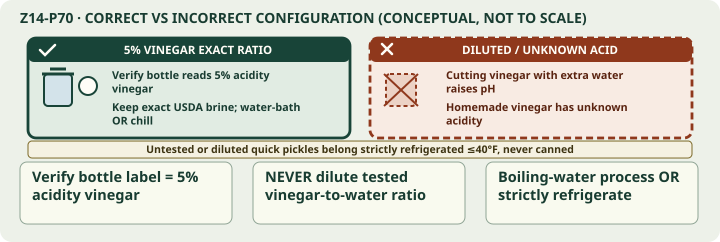

Z14-P70 · Food production and preservation · New manuscript
Follow exact 5% vinegar acidity and brine ratios in tested quick-pickle recipes
Ensure safe low-pH acidification throughout pickled cucumbers, peppers, green beans, and relishes without dilution errors.
When it applies · Home preparation of shelf-stable vinegar quick-pickles, pickled vegetables, and relishes.
Equipment · Commercially standardized **5% acidity vinegar** (white distilled or cider), pure canning/pickling salt, exact tested USDA/NCHFP recipe, and boiling-water canner.

Actions
- Use ONLY commercially standardized 5% acidity vinegar (check the bottle label—many specialty/rice/diluted vinegars sit at 4% or lower and are UNSAFE for shelf-stable canning!), and NEVER dilute the vinegar-to-water ratio stated in the tested USDA/NCHFP recipe to make pickles "less sour."[P13, P08]
- Use pure granulated canning and pickling salt (free of anti-caking cloudiness and iodine off-colors—do NOT substitute reduced-sodium salt freely in tested preservation recipes) and crisp fresh unwaxed pickling cucumbers trimmed 1/16 inch off the blossom end (blossom enzymes soften pickles).[P13]
- Process shelf-stable pickled jars strictly in a tested boiling-water canner (or USDA low-temperature pasteurization ONLY where explicitly printed in the tested recipe)—otherwise keep quick refrigerator pickles strictly chilled at ≤40°F and eat within weeks.[P13, P08]
Failure recognition · Cutting the vinegar in half with extra tap water in a home-canned dill-pickle recipe to reduce tartness, pushing jar pH above 4.6.[P13, P06]
Verify · Confirm bottle reads 5% acidity, exact tested vinegar-to-water ratio kept intact, and jars either properly boiling-water processed or kept strictly refrigerated.[P13, P08]
Stop or change course · Unverified homemade vinegar (unknown acidity %) or altered vinegar dilutions prohibit shelf-stable canning—refrigerate and eat promptly or discard.[P13]
Evidence and editorial notes
- P06 · USDA / NCHFP · USDA Complete Guide to Home Canning (2015 / current NCHFP edition)
- Section: Complete Guide to Home Canning > Principle of Tested Protocols · Conditions: All residential home canning (boiling-water and pressure canning)
Support: Treat every USDA/NCHFP tested canning recipe as a single indivisible system: food pH, piece size, liquid viscosity, jar size, headspace, processing method, pressure/temperature, time, and altitude adjustment must all match the tested protocol.
Limitations: Adding extra starch, flour, oil, fats, or altering acid/low-acid ratios slows heat penetration and can cause lethal botulism. · Conflicting evidence: Directly prohibits online untested shortcuts and heirloom recipe alterations.
Editorial note: Foundational system-integrity rule across all Z14 canning cards. · Specialist reviewer: Food preservation process authority and Extension
Primary source · checked 2026-11-24 - P08 · NCHFP · Using Boiling Water Canners (current web edition)
- Section: Using Boiling Water Canners > High-Acid Foods and Acidification · Conditions: Naturally high-acid foods (pH ≤ 4.6: most fruits, jams, tested pickles) and properly acidified tomatoes
Support: Use boiling-water or validated atmospheric-steam canning strictly for tested high-acid recipes; add the exact required bottled lemon juice or citric acid to tomatoes per USDA tables because modern tomato acidity varies near the 4.6 pH boundary.
Limitations: Atmospheric steam canners have strict processing-time caps (e.g., 45 minutes max including altitude adjustment) and require tested recipes. · Conflicting evidence: Corrects common mistake of using fresh-squeezed lemon juice (variable acidity) instead of standardized bottled lemon juice.
Editorial note: Separates high-acid vs low-acid canning gates cleanly. · Specialist reviewer: Food preservation and Extension specialist
Primary source · checked 2026-11-24 - P13 · NCHFP · Fermenting and Pickling Foods (current web edition)
- Section: Fermenting and Pickling > Salt Ratios, Vinegar Acidity, and Submerged Brine · Conditions: Tested lacto-fermented vegetables (sauerkraut/pickles) and vinegar quick-pickles
Support: Use standardized 5% acidity vinegar for tested pickle recipes and exact weighed/measured canning-and-pickling salt (not iodized/anti-caking salt) plus clean food-grade crocks and submerged weights for lacto-fermentation at controlled temperatures.
Limitations: Altering salt/vinegar ratios or allowing surface mold/scum in warm rooms causes spoilage and unsafe pH drift. · Conflicting evidence: None; separates tested fermentation/pickling from improvised brining.
Editorial note: Grounds fermentation, pickling, and acidity verification cards. · Specialist reviewer: Food microbiology and Extension preservation
Primary source · checked 2026-11-24
Source lineage · NCHFP Fermenting and Pickling Foods; new manuscript · Classification · New manuscript.